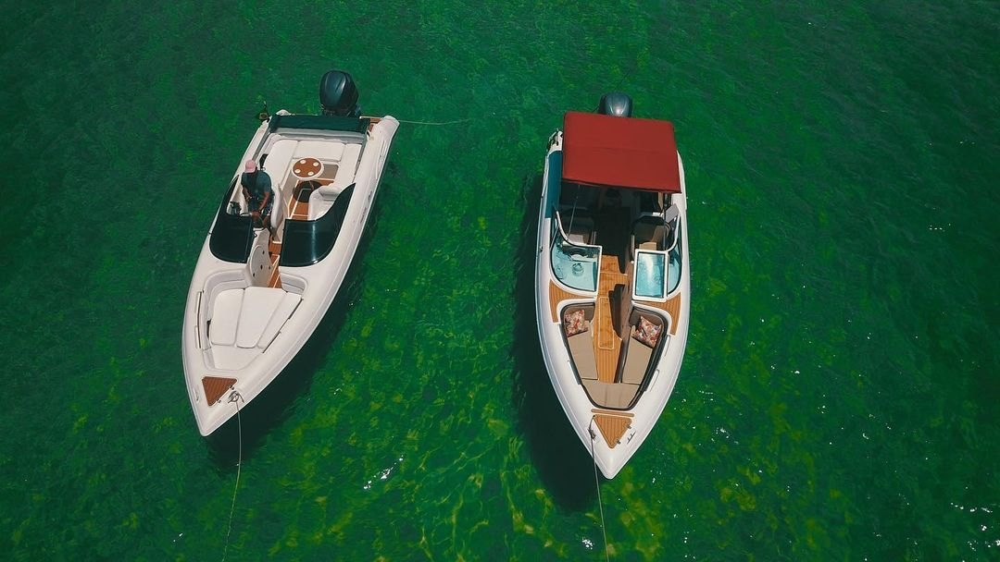
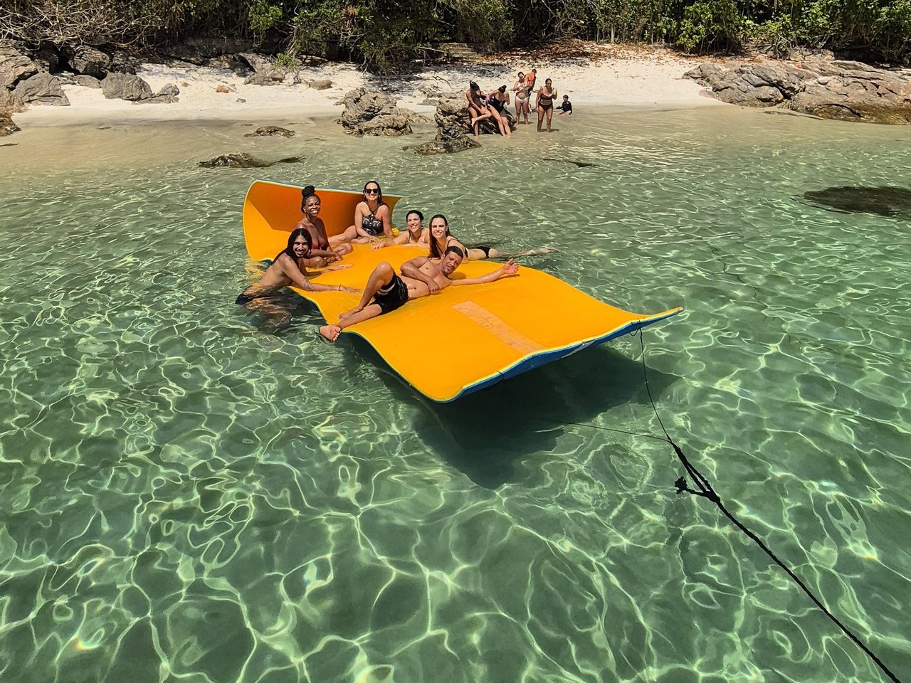

🛥️ Saída Marina Piratas · ★ 5,0 no Google (158 avaliações)
Angra dos Reis e Ilha Grande na sua própria lancha.
Passeios privativos de lancha e iate saindo da Marina Piratas. Águas cristalinas, churrasco preparado a bordo pelo piloto e roteiro no ritmo da sua família.
⏱️ Até 7h de passeio🥩 Churrasco a bordo🤿 Máscaras & tapete flutuante
Exclusividade, churrasco e cuidado do início ao fim.
🛥️Lanchas & Iates PrivativosEmbarcação exclusiva para a sua turma
🥩Churrasco feito pelo pilotoVocê aproveita o mar enquanto preparamos tudo
🤿Tapete flutuante & mergulhoSnorkel, macarrão, som Bluetooth e cooler
💍Momentos inesquecíveisApoio completo em pedidos de casamento e festas

Águas verde-esmeralda de Angra

Tapete flutuante nas paradasLanchas e iates com marinheiro
★★★★★Sensacional! Demos muita sorte de ter a Sibelle como orientadora de todo o passeio desde o início! Toda a organização foi maravilhosa.
Natacha Florence · Avaliação no Google
★★★★★Passeio nota 1000! Os anfitriões são muito solícitos, o piloto conhece as melhores praias e ainda faz um churrasco muito bom a bordo.
Daniel Brasilio · Avaliação no Google
★★★★★Fizemos dois passeios maravilhosos com o marinheiro Ronaldo! Que experiência maravilhosa, muito bem recebidos com lanche e mimos.
Karoline Malvar · Avaliação no Google
O passeio é 100% privativo?
Sim! A lancha vai exclusivamente com o seu grupo e o nosso marinheiro habilitado, parando nas praias pelo tempo que vocês preferirem.
Como funciona o churrasco a bordo?
Nossas lanchas contam com churrasqueira e cooler. Você pode levar as carnes e bebidas de sua preferência e o nosso piloto assa para vocês durante o passeio.
Localização e embarque
Embarque fácil na Marina Piratas.
Ponto de embarqueMarina Piratas (junto ao Shopping Piratas) · Estrada Municipal, 200 - Praia do Jardim, Angra dos Reis - RJ